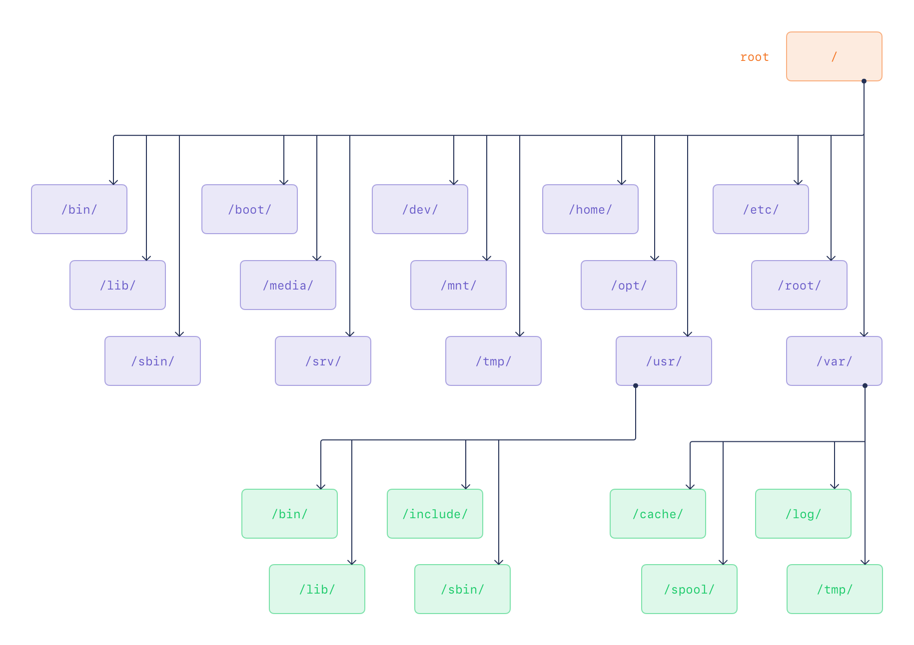

3. Linux Filesystem Hierarchy¶
Goals
Define the Linux Filesystem Hierarchy Standard, explain the Ubuntu filesystem hierarchy, and identify Linux file types.
Note
Results were captured on this LABVM. Directory listings vary with its state.
3.1 The Filesystem Hierarchy Standard¶
Directory Structure¶
The Filesystem Hierarchy Standard (FHS), maintained by the Linux Foundation, defines directory structure and contents for Unix and Unix-like operating systems. It is currently used only by Linux distributions. Under the FHS, all files and directories appear below the root directory /, even when stored on different physical or virtual devices.
The root filesystem must be adequate to boot, restore, recover, or repair the system. It should be as small as reasonably possible because it can be mounted from small media, is less prone to corruption after a system crash, and must not contain application-created or application-required files and subdirectories.
To boot, the root filesystem must contain enough software and data to mount other filesystems, including utilities, boot-loader configuration, and essential start-up data. To recover or repair a system, it must provide utilities for an experienced maintainer to diagnose and repair issues and reconstruct a damaged system. To restore a system, it must provide backup restoration utilities.
The cd Command¶
The cd command changes the current directory. Its reference syntax is cd [option] [directory].
Without a directory name, cd returns the user to the previous current directory, which can toggle between two directories. With a directory name, it changes to that directory. The name can be an absolute pathname, relative to /, or a local pathname, relative to the current directory.
Examples using absolute paths include cd / and cd /usr/sbin.
To change from the current directory into a subdirectory, use cd followed by its name, for example cd gconf from within /etc when that directory is available.
The current directory is represented by ., and its parent directory by ..; use cd .. to move to the parent.
A tilde returns to the home directory, where a user's personal files, directories, and programs are found; use cd ~ to change there.
Other navigation forms include cd - to move to the previous directory and cd ../../ to move two levels up.
3.2 Required Root Filesystem Directories¶

The following directories, or symbolic links to directories, are required in /:
/bin - essential command binaries
/dev - device files
/etc - host-specific system configuration
/sbin - essential system binaries
/usr - secondary hierarchy
/var - variable data hierarchy
/boot - static files of the boot loader
/lib - essential shared libraries and kernel modules
/media - mount point for removable media
/mnt - mount point for mounting a filesystem temporarily
/tmp - temporary files
Modern Linux distributions also include:
/sys - Kernel system information virtual filesystem
/proc - Kernel process information virtual filesystem
Optional root filesystem directories include:
/home - User home directories
/lib64 or /lib32 - Essential system libraries
/root - Home directory for the root user
The /usr Hierarchy¶
The second major filesystem section is shareable and should contain only read-only data. Required subdirectories are:
/usr/bin - Most user commands
/usr/lib - Libraries
/usr/local - Local hierarchy
/usr/sbin - Non-vital system binaries
/usr/share - Architecture independent data
Optional subdirectories include:
/usr/games - Games and educational binaries
/usr/include - Header files included by C programs
/usr/libexec - Binaries run by other programs
/usr/lib64 or /usr/lib32 - Alternate format libraries
/usr/src - Source code
The /var Hierarchy¶
The /var directory is designed for files that vary in size:
- Spool directories and files
- Administrative and logging data
- Transient files
- Temporary files
Required subdirectories are:
/var/cache - Application cache data
/var/lib - Variable state information
/var/local - Variable data for /usr/local
/var/lock - Lock files
/var/log - Log files and directories
/var/opt - Variable data for /opt
/var/run - Data relevant to running processes
/var/spool - Application spool data
/var/tmp - Temporary files preserved between system reboots
The /etc Hierarchy¶
The /etc directory maintains many files, including:
/etc/passwd - user database with user information such as username and home directory
/etc/shadow - encrypted file that holds user passwords
/etc/fstab - lists filesystems mounted automatically at startup by mount -a
/etc/group - similar to /etc/passwd, but describes groups instead of users
/etc/inittab - configuration file for init
/etc/mtab - list of currently mounted filesystems
/etc/profile, /etc/bash.rc - files executed by BASH at login or startup
3.2.1 Directory Structure Lab¶
This lab examines filesystem directories and their contents.
- Check the current directory, then change to the root directory.
# Print the current working directory.
pwd
Expected result
/home/ubuntu
# Change to the root directory.
cd /
Expected result
No output.
- List the root directory contents and compare them with the preceding directory list.
# List the root directory contents.
ls
Expected result
Literal excerpt from this LABVM:
bin
bin.usr-is-merged
boot
dev
etc
home
lib
lib.usr-is-merged
lib64
lost+found
media
mnt
opt
proc
root
run
sbin
sbin.usr-is-merged
snap
srv
- Change into
/usr.
# Change to the /usr directory.
cd /usr
Expected result
No output.
- Inspect the listed
usrsubdirectories.
# List the /usr/lib directory contents.
ls lib
Expected result
Literal excerpt from this LABVM:
apparmor
apt
binfmt.d
byobu
cloud-init
cnf-update-db
command-not-found
console-setup
cryptsetup
dbus-1.0
dhcpcd
dpkg
dracut
environment.d
file
finalrd
girepository-1.0
git-core
gnupg
gnupg2
# List the /usr/games directory contents.
ls games
Expected result
No output.
# List the /usr/local directory contents.
ls local
Expected result
bin
etc
games
include
lib
man
sbin
share
src
- Change back to
/, then change to/var.
# Change to the root directory.
cd /
Expected result
No output.
# Change to the /var directory.
cd /var
Expected result
No output.
- Inspect the
varsubdirectory listed on the preceding page.
# List the /var/cache directory contents.
ls cache
Expected result
Literal excerpt from this LABVM:
PackageKit
adduser
app-info
apparmor
apt
debconf
fwupd
fwupdmgr
ldconfig
man
motd-news
pollinate
private
snapd
swcatalog
- Change to the
cachesubdirectory, then move two directories up.
# Change to the cache subdirectory.
cd cache
Expected result
No output.
# Move two directories up from the current directory.
cd ../../
Expected result
No output.
- Change to the home directory.
# Change to the current user's home directory.
cd ~
Expected result
No output.
- Install
tree, then run it from the home directory.
# Install the tree package without an interactive confirmation prompt.
sudo apt install tree -y
Expected result
Literal excerpt from this LABVM:
WARNING: apt does not have a stable CLI interface. Use with caution in scripts.
The following NEW packages will be installed:
tree
0 upgraded, 1 newly installed, 0 to remove and 113 not upgraded.
Setting up tree (2.1.1-2ubuntu3.24.04.2) ...
Package versions and upgrade counts can vary.
If installation reports insufficient disk space or incomplete packages, use the end-of-chapter troubleshooting steps before returning here.
# Remove downloaded package archives while retaining installed packages.
sudo apt clean
Expected result
WARNING: apt does not have a stable CLI interface. Use with caution in scripts.
# Change to the current user's home directory.
cd ~
Expected result
No output.
# Display the home directory in a tree-like format.
tree
Expected result
.
0 directories, 0 files
- List
/withtreeand inspect it.
# Display one level of the root directory tree.
tree -L 1 /
Expected result
Literal first-20-line excerpt from this LABVM:
/
├── bin -> usr/bin
├── bin.usr-is-merged
├── boot
├── dev
├── etc
├── home
├── lib -> usr/lib
├── lib.usr-is-merged
├── lib64 -> usr/lib64
├── lost+found
├── media
├── mnt
├── opt
├── proc
├── root
├── run
├── sbin -> usr/sbin
├── sbin.usr-is-merged
├── snap
- Go one level deeper and inspect it.
# Display two levels of the root directory tree.
tree -L 2 /
Expected result
Literal first-20-line excerpt from this LABVM:
/
├── bin -> usr/bin
├── bin.usr-is-merged
├── boot
│ ├── System.map-6.8.0-138-generic
│ ├── System.map-6.8.0-53-generic
│ ├── config-6.8.0-138-generic
│ ├── config-6.8.0-53-generic
│ ├── efi
│ ├── grub
│ ├── initrd.img -> initrd.img-6.8.0-138-generic
│ ├── initrd.img-6.8.0-138-generic
│ ├── initrd.img-6.8.0-53-generic
│ ├── initrd.img.old -> initrd.img-6.8.0-53-generic
│ ├── lost+found
│ ├── vmlinuz -> vmlinuz-6.8.0-138-generic
│ ├── vmlinuz-6.8.0-138-generic
│ ├── vmlinuz-6.8.0-53-generic
│ └── vmlinuz.old -> vmlinuz-6.8.0-53-generic
├── dev
End of the lab. Do not continue with the next topic.
3.3 Linux File Types¶
Determining File Types¶
Use ls to determine a file type.
# List detailed information for /etc/hosts.
ls -l /etc/hosts
Expected result
-rw-r--r-- 1 root root 221 Feb 14 2025 /etc/hosts
The first character in the output, - in this example, indicates the file type. Linux file types are:
| Type | Symbol | Description |
|---|---|---|
| regular | - |
Any file that is not a directory or special file type. |
| directory | d |
The second-most common file type. |
| socket | s |
Provides inter-process communication. |
| block | b |
A device file that communicates with a driver in the kernel. |
| link | l |
A pointer to another file; can be a soft or hard link. |
| named pipe | p |
Similar to sockets; provides IPC without network sockets. |
| character | c |
A device file that communicates with a driver in the kernel. |
A regular file is not a directory or special file type. Regular files include binaries or libraries, configuration files, image files, audio or video files, data files, and tar files.
A directory is the second-most common file type. It organizes other file types and is essentially a file that lists other files.
A socket provides inter-process communication. When it has a filename, it can be accessed through the filesystem. TCP/IP sockets can be accessed over the network.
A block file communicates with a kernel driver, which usually communicates with hardware. Data flow is buffered. Block files are used with block storage devices such as disks or memory. Examples include /dev/sda and /dev/ram0.
A pipe is similar to a socket and lets processes communicate without network socket semantics; the processes do not need to be designed to work together.
A character file communicates with a kernel driver, which usually communicates with hardware. Data flow is unbuffered: each character is consumed when written and read when provided. Keyboard and mouse files are examples. Character special files include /dev/ttyS0 and /dev/console.
3.3.1 File Types Lab¶
This lab examines file types.
- Run the following commands and identify the file types.
# List detailed information for the /etc directory.
ls -ld /etc
Expected result
drwxr-xr-x 106 root root 4096 Aug 26 06:32 /etc
# List detailed information for /etc/hosts.
ls -l /etc/hosts
Expected result
-rw-r--r-- 1 root root 221 Feb 14 2025 /etc/hosts
# List detailed information for the controlling terminal.
ls -l /dev/tty
Expected result
crw-rw-rw- 1 root tty 5, 0 Aug 25 11:29 /dev/tty
# List detailed information for the vda block device.
ls -l /dev/vda
Expected result
brw-rw---- 1 root disk 253, 0 Aug 26 06:30 /dev/vda
- Inspect the many file types in
/dev.
# List detailed information for device files.
ls -l /dev/
Expected result
Literal excerpt from this LABVM:
total 0
crw-r--r-- 1 root root 10, 235 Aug 25 11:29 autofs
drwxr-xr-x 2 root root 340 Aug 26 06:32 block
crw-rw---- 1 root disk 10, 234 Aug 25 11:29 btrfs-control
drwxr-xr-x 3 root root 60 Aug 25 11:29 bus
drwxr-xr-x 2 root root 3300 Aug 25 11:29 char
crw--w---- 1 root tty 5, 1 Aug 25 11:30 console
lrwxrwxrwx 1 root root 11 Aug 25 11:29 core -> /proc/kcore
drwxr-xr-x 4 root root 80 Aug 25 11:29 cpu
crw------- 1 root root 10, 123 Aug 25 11:29 cpu_dma_latency
crw------- 1 root root 10, 203 Aug 25 11:29 cuse
drwxr-xr-x 7 root root 140 Aug 25 11:29 disk
drwxr-xr-x 2 root root 60 Aug 25 11:29 dma_heap
crw------- 1 root root 10, 125 Aug 25 11:29 ecryptfs
lrwxrwxrwx 1 root root 13 Aug 25 11:29 fd -> /proc/self/fd
crw-rw-rw- 1 root root 1, 7 Aug 25 11:29 full
crw-rw-rw- 1 root root 10, 229 Aug 26 06:32 fuse
crw------- 1 root root 10, 228 Aug 25 11:29 hpet
drwxr-xr-x 2 root root 0 Aug 25 11:29 hugepages
- Create a file and inspect its type.
# Create an empty regular file.
touch file1.txt
Expected result
No output.
# List detailed information for the new file.
ls -l file1.txt
Expected result
-rw-rw-r-- 1 ubuntu ubuntu 0 Aug 27 19:05 file1.txt
- Create a directory and inspect it.
# Create a directory named dirone.
mkdir dirone
Expected result
No output.
# List the dirone directory entry.
ls -l | grep dirone
Expected result
drwxrwxr-x 2 ubuntu ubuntu 4096 Aug 27 19:05 dirone
- Remove the file and directory.
# Remove the empty dirone directory.
rmdir dirone/
Expected result
No output.
# Remove the file1.txt file.
rm file1.txt
Expected result
No output.
End of the lab. Do not continue with the next topic.
Package Troubleshooting¶
Warning
Use these steps only if the existing tree installation step reports insufficient disk space or incomplete packages. Do not remove packages or files. After the checks succeed, return to the existing tree installation step.
# Show available space on the root filesystem.
df -h /
Expected result
Filesystem Size Used Avail Use% Mounted on
/dev/vda1 2.4G 2.1G 328M 87% /
# Remove downloaded package archives while retaining installed packages.
sudo apt clean
Expected result
WARNING: apt does not have a stable CLI interface. Use with caution in scripts.
# Complete any interrupted package configuration.
sudo apt-get --fix-broken install -y
Expected result
Literal excerpt from this LABVM:
Correcting dependencies... Done
The following additional packages will be installed:
linux-modules-6.8.0-138-generic linux-tools-6.8.0-138
0 upgraded, 2 newly installed, 0 to remove and 113 not upgraded.
Setting up linux-modules-6.8.0-138-generic (6.8.0-138.138) ...
Setting up linux-tools-6.8.0-138 (6.8.0-138.138) ...
# Check for packages that remain only partially configured.
sudo dpkg --audit
Expected result
No output.